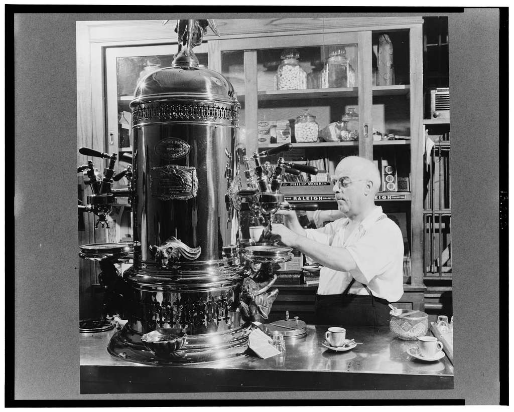
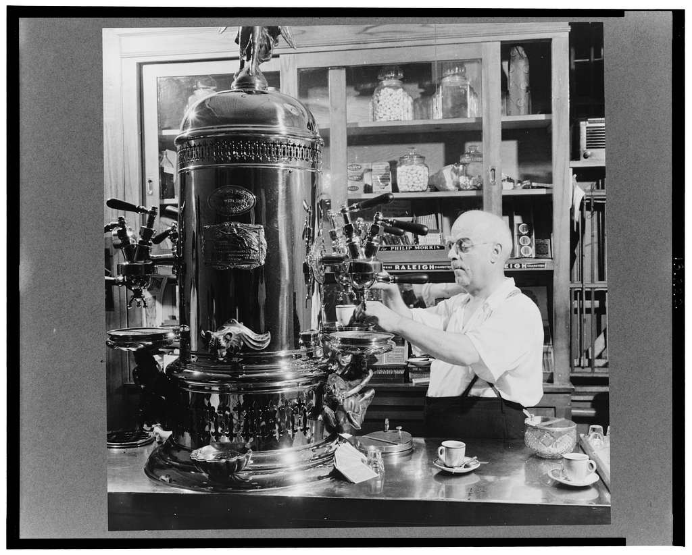

Our Story

A coffeehouse, coffee shop, or café, is an establishment that serves various types of coffee, espresso, latte, americano and cappuccino, among other hot beverages. Some coffeehouses may serve iced coffee among other cold beverages, such as iced tea, as well as other non-caffeinated beverages. A coffeehouse may also serve food, such as light snacks, sandwiches, muffins, cakes, breads, pastries, and/or donuts. Many doughnut shops in the Canadian and U.S. serve coffee as an accompaniment to doughnuts. In continental Europe, some cafés even serve alcoholic beverages. Coffeehouses range from owner-operated small businesses to large multinational corporations. Some coffeehouse chains operate on a franchise business model, with numerous branches across various countries around the world.
 
